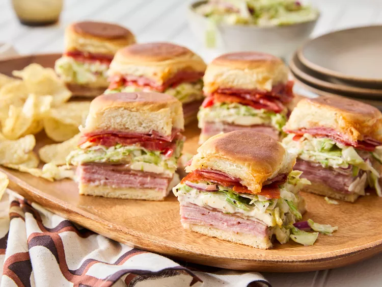

Grinder Sliders

Description
Need an easy meal to take to the pool or beach? Here's another recipe to pack in the cooler. Stack meat, cheese, and a special grinder salad on Hawaiian rolls and call it lunch, dinner, or a midday snack that everyone will be grabbing.
ingredients
- Hawaiian rolls (12-count pack)
- Black Forest ham
- Prosciutto
- Italian salami
- Pepperoni
- Provolone cheese
- Fresh mozzarella
- Iceberg lettuce
- Roma tomato
- Red onion
- Pepperoncini peppers
- Mayonnaise
- Dijon mustard
- Red wine vinegar
- Submarine dressing
preparation
- Slice the Hawaiian rolls in half horizontally.
- Layer ham, prosciutto, salami, pepperoni, provolone, and mozzarella on the bottom half.
- Place the top half of the rolls back on and bake until the cheese is melted.
- Mix mayonnaise, Dijon mustard, red wine vinegar, oregano, basil, and black pepper to make the grinder dressing.
- Toss lettuce, tomato, red onion, and pepperoncini with the dressing.
- Remove the sliders from the oven and add the dressed salad mixture.
- Cut into individual sliders and serve.